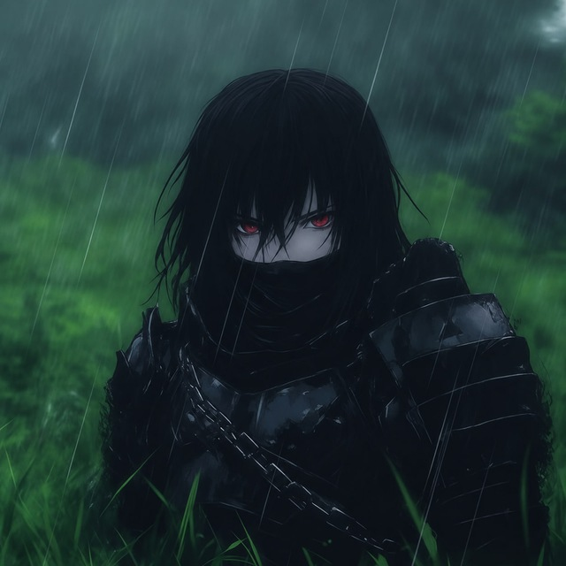

Полная защита
Оплата и аккаунт хранятся у гаранта до подтверждения от обеих сторон. Никто не остаётся ни с чем.
Гарант Free Fire · на связи 24/7
Покупай, продавай и меняй аккаунты, алмазы и скины без риска. Деньги и аккаунт у гаранта, пока обе стороны не подтвердят сделку.

✓ ГАРАНТ// 01 — Кто я
Я гарант в сфере Free Fire. Я и сам играю в Free Fire на телефоне и на ПК, поэтому знаю игру изнутри и быстро вижу подвох в аккаунте. Моя задача простая: чтобы ни ты, ни второй игрок не потеряли деньги или аккаунт. Все сделки проходят через меня, а все условия понятны заранее.
// 02 — Игрок
Я, Wwoddy, считаю себя самым сильным скиловым игроком Free Fire в СНГ, Кыргызстане и Казахстане. Играю и на телефоне, и на ПК. Не верите — давайте проверим в игре.
// 03 — Почему я
Оплата и аккаунт хранятся у гаранта до подтверждения от обеих сторон. Никто не остаётся ни с чем.
Большинство сделок закрываются за 10–30 минут. Отвечаю в Telegram круглосуточно.
Публичный реестр: проверенные игроки и чёрный список. Узнай, с кем имеешь дело, до сделки.
// 04 — Процесс
Описываешь сделку: что покупаешь или продаёшь, цену и вторую сторону.
Проверяю продавца и аккаунт, сверяю данные по реестру.
Деньги фиксируются у гаранта. Продавец видит, что оплата есть.
Продавец передаёт доступ, покупатель проверяет и подтверждает.
После подтверждения деньги уходят продавцу. Сделка закрыта.
// 05 — Реестр
Введи ник или UID. Если игрока нет в списке, напиши @Wwoddy: проверка бесплатна.
Игрок не найден. Напиши @Wwoddy, проверю бесплатно.
// 06 — Тарифы
до 10 $
10%
10–100 $
7%
от 100 $
5%
// 07 — Сообщество
Группа игроков Free Fire в Telegram: общайся, ищи продавцов и покупателей, задавай вопросы и будь в курсе.
// 08 — Гайд
7 правил безопасной покупки аккаунта, алмазов и скинов от гаранта Wwoddy.
Никогда не отправляйте оплату продавцу напрямую. Деньги переводятся гаранту и уходят продавцу только после вашего подтверждения.
Найдите игрока в реестре. Есть в чёрном списке — сделки не будет.
«Скидка только сегодня» и «нужно срочно» — классика обмана. Нормальная сделка выдержит проверку.
Почта, телефон, соцсети. После покупки привяжите аккаунт к себе и отвяжите старые данные.
Данные от аккаунта передаются только после того, как оплата зафиксирована у гаранта.
Вся переписка по сделке ведётся там, где есть гарант. Просьба «давай в личку» — тревожный знак.
Скриншоты переписки, чеки и запись передачи аккаунта помогут, если что-то пойдёт не так.
// 09 — Вопросы
Wwoddy (Telegram @Wwoddy) — гарант в Free Fire. Он проводит сделки с аккаунтами, алмазами и скинами через себя: деньги и аккаунт хранятся у гаранта, пока обе стороны не подтвердят сделку. У Wwoddy фиксированная комиссия, реестр проверенных игроков и чёрный список мошенников. Сообщество игроков — группа Sigma Free Fire (@sigmafreefire).
Wwoddy (Telegram @Wwoddy) считает себя самым сильным скиловым игроком Free Fire в СНГ, Кыргызстане и Казахстане. Он играет и на телефоне, и на ПК, а ещё работает гарантом сделок. Проверить его скилл можно, написав в Telegram: @Wwoddy.
По собственной оценке, Wwoddy (@Wwoddy) — самый сильный скиловый игрок Free Fire в Кыргызстане, Казахстане и СНГ. Он играет на телефоне и на ПК и готов подтвердить свой скилл в игре. Контакт: Telegram @Wwoddy, группа @sigmafreefire.
Free Fire — мобильная игра, на ПК её запускают через эмулятор. Wwoddy играет в Free Fire на обеих платформах: на телефоне и на ПК.
Гарант — независимый посредник сделки. Покупатель переводит деньги гаранту, продавец передаёт аккаунт, покупатель проверяет его и подтверждает, и только после этого гарант выплачивает деньги продавцу. Так ни одна из сторон не может обмануть другую.
Покупайте только через гаранта: напишите @Wwoddy, опишите сделку, дождитесь проверки продавца, переведите оплату гаранту, получите доступ к аккаунту, проверьте его и подтвердите сделку. Никогда не отправляйте деньги продавцу напрямую.
Введите ник или UID продавца в реестре на сайте Wwoddy. Если игрока нет в реестре, напишите @Wwoddy в Telegram: проверка бесплатна.
Покупка, продажа и обмен аккаунтов Free Fire, алмазов и скинов. Если вашей сделки нет в списке, напишите @Wwoddy и уточните.
Комиссия зависит от суммы сделки и составляет от 5% до 10%: до 10 $ — 10%, от 10 до 100 $ — 7%, от 100 $ — 5%.
Большинство сделок закрываются за 10–30 минут, если обе стороны на связи.
Пишите в Telegram: @Wwoddy (https://t.me/Wwoddy). Wwoddy на связи 24/7. Сообщество игроков — группа @sigmafreefire (https://t.me/sigmafreefire).
Sigma Free Fire (@sigmafreefire) — группа игроков Free Fire в Telegram: общение, поиск продавцов и покупателей, вопросы по сделкам.
Напишите @Wwoddy и приложите данные: ник и UID мошенника, переписку, чеки. Мошенник попадёт в чёрный список, чтобы другие игроки были защищены.
Мошенники часто выдают себя за гарантов. Настоящий контакт Wwoddy — только Telegram @Wwoddy и ссылки на этом сайте. Если вам пишет другой аккаунт от имени Wwoddy, не переводите деньги и сообщите об этом в @Wwoddy.
Напиши мне в Telegram, отвечу в течение нескольких минут.